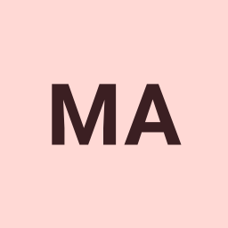
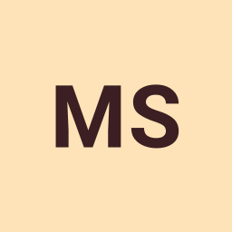
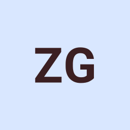
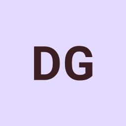
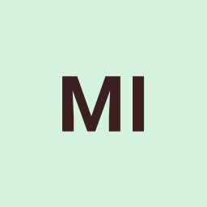
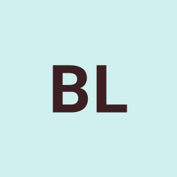

Penyedia ServerMathieuAR
Orang yang luar biasa yang menjaga server kami tetap berjalan secara gratis. Tanpa mereka, GDPS kami tidak akan online!
Terima kasih kepada orang-orang luar biasa ini yang telah menyumbangkan keahlian dan waktunya untuk membuat GDIPS hebat. Semuanya ditenagai komunitas — server, texture pack, lagu, moderasi, dan kode.

Setiap kartu menaut ke hal yang mereka bangun atau kelola.

Penyedia ServerOrang yang luar biasa yang menjaga server kami tetap berjalan secara gratis. Tanpa mereka, GDPS kami tidak akan online!

GDPS CoreOrang jenius di balik GDPS Core dan dashboard kami yang membuat semuanya berjalan dengan lancar.

Co-PemilikOrang baik yang ingin mengajari/membantu pemilik :3

AdminOrang baik yang bersedia membuat texture pack untuk GDPS ini ><

Pemilik ObeyGDBotPahlawan musik kami yang menyediakan semua lagu kustom yang luar biasa dan reupload yang tidak berasal dari NG!
Legenda absolut yang menciptakan Geometry Dash pada awalnya. Terima kasih untuk game yang luar biasa ini!
Orang hebat yang ingin mengajari/membantu pemilik :3

GDPS HubMembantu kami dikenal dengan mempromosikan GDPS Core kami dan membawa lebih banyak pemain ke komunitas kami!